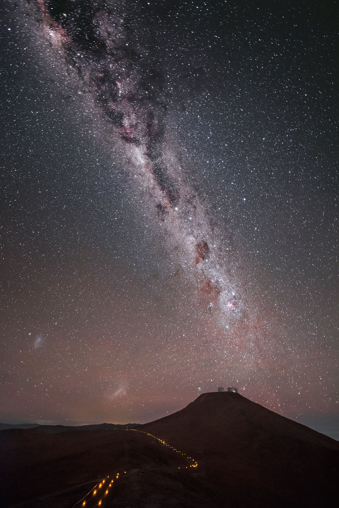

Quién soy?
Astronauta especializada en la atención al público. Nacida en el oeste argentino, 7 años antes del "corralito", 5 años después del primer episodio de Los Simpson, más precisamente en el año del atentado a la AMIA, en el Día Mundial de Concientización sobre Tsunamis a nivel internacional o también el día en que se inventa el viaje en el tiempo(en la película Volver al futuro).

Ver más información e imágenes